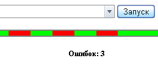

[закрыть]
Добро пожаловать!
Тут можно протестировать jsFUnit.
Для демонстрации написаны несколько тестов.
Внимание! 3 теста специально завершаются с ошибкой. Это сделано, чтобы продемонстрировать красные промежутки в прогресс-баре.
Поднесите к прогресс-бару мышку и лог переместится к сообщениям соответствующего теста.